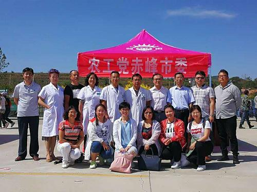
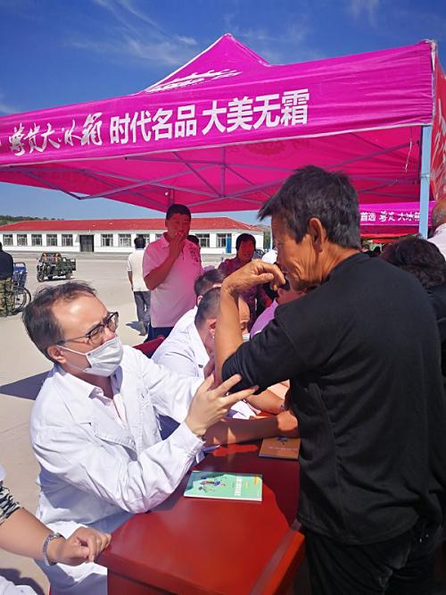

近日，在市委农工党的带领下，开展“携手奏响同心和谐曲 助力打赢脱贫攻坚”活动，农工党红山支部积极发挥党员的优势，组织专家医疗队到翁牛特旗毛山东乡参加大型农支医义诊活动。

义诊活动中专家医疗队免费为村民测量血压、开治疗处方、接受咨询、宣传健康知识，同时农工党红山支部还为翁牛特旗毛山东乡捐赠电脑一台。

本次活动充分体现了农工党落实全市统一战线助力脱贫攻坚工作推进会的具体行动，参加活动的党派成员纷纷表示，要尽心履职，聚力帮扶，精准发力，为打赢脱贫攻坚战作出贡献。